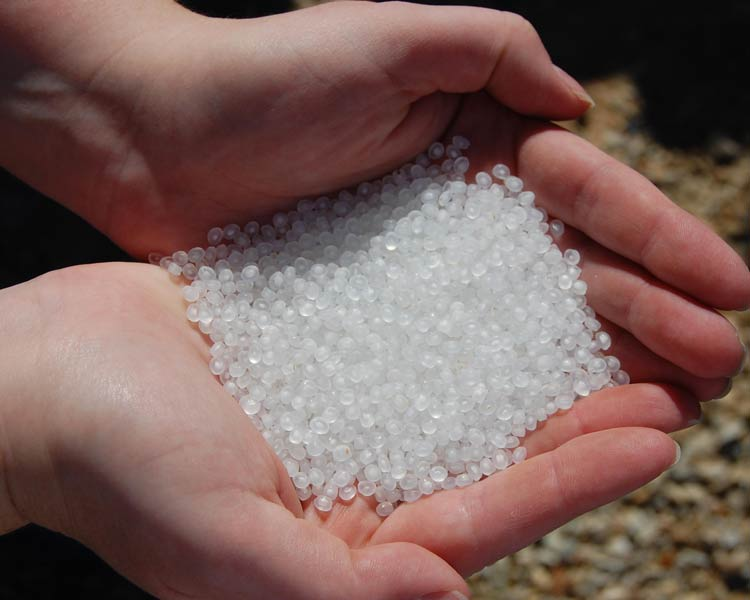
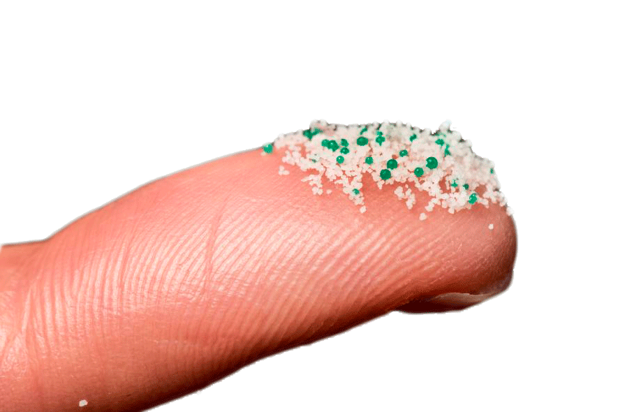

Los pequeños más contaminantes del mar
Se conoce por nurdles (del inglés), también llamados «lagrimas de sirena» a las bolitas de plástico generalmente de menos de cinco milímetros de diámetro que se encuentran en las aguas marinas y en las costas. Constituyen un componente importante de los desechos marinos.
Se usan como materias primas en la manufactura y fabricación de plásticos, y se estima que entran en ambientes naturales por derrames accidentales. También se generan por el desgaste físico de desechos plásticos de mayor talla. Visualmente los nurdles se parecen mucho a los huevos de peces.
Aunque en un principio se asumió que la mayoría de los desechos marinos provenían directamente de descargas al mar (ocean dumping), se estima que alrededor de cuatro quintos de los desechos marinos provienen de basura arrastrada por el viento de basureros, y la que vierten los desagües urbanos. En un estudio publicado por Science, Jambeck et al (2015) estimaron que los 10 mayores emisores de polución marítima son, de mayor a menor, China, Indonesia, Las Filipinas, Vietnam, Ceilán, Tailandia, Egipto, Malaysia, Nigeria, y Bangladés. En un estudio publicado por Environmental Science & Technology, Schmidt et al (2017) calcularon que los ríos Yangtsé, Indus, Amarillo, Hai, Nilo, Ganges, de las Perlas, Amur, Níger, y el Mekong "transportan 88–95% de la carga global de [plásticos] al mar."
Otras fuentes de desechos marinos son la pesquería y el transporte de mercancías por los mares.17 Se estima que los barcos con contenedores pierden cerca de 10000 contenedores al año (usualmente durante las tormentas).
Un famoso derrame ocurrió en el océano Pacífico en 1992, cuando miles de patos de goma y otros juguetes cayeron al mar durante una tormenta. Los juguetes fueron encontrados desde esa fecha alrededor de todo el mundo; Curtis Ebbesmeyer y otros científicos han usado este incidente para comprender mejor las corrientes marinas. Incidentes similares ocurrieron antes, con el mismo potencial para seguir las corrientes, como cuando Hansa Carrier perdió contenedores (con gran cantidad de zapatillas Nike). En 2007, el MSC Napoli que estaba varado en el Canal de la Mancha, arrojó cientos de contenedores, la mayoría en la Costa Jurásica, un sitio que es Patrimonio de la Humanidad. En 1987, una marea de jeringas y otros desechos médicos llegaron a las costas de Nueva Jersey, el Fresh Kill Landfill (el desecho sanitario más grande del mundo). Incluso en la remota isla de subantártica de las Georgias del Sur, se han encontrado desechos relacionados con la pesca, aproximadamente el 80 % de plásticos, que son los responsables de enredar a un gran número de lobos marinos.
Fuente: Wikipedia
Charla TED Ed. La búsqueda de los nurdles por el dominio del océano - Kim Preshoff
© FREE OCEAN. Fotografías, Unsplash
Actividad realizada por Nazaret Gallego del Pino, para la asignatura HTML y CSS I. Primer semestre del curso 2019-2020